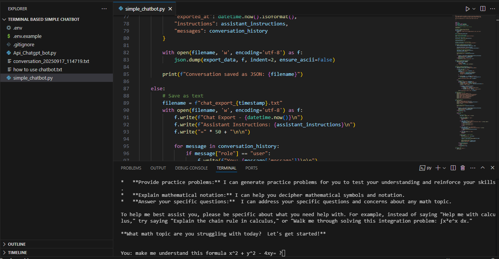
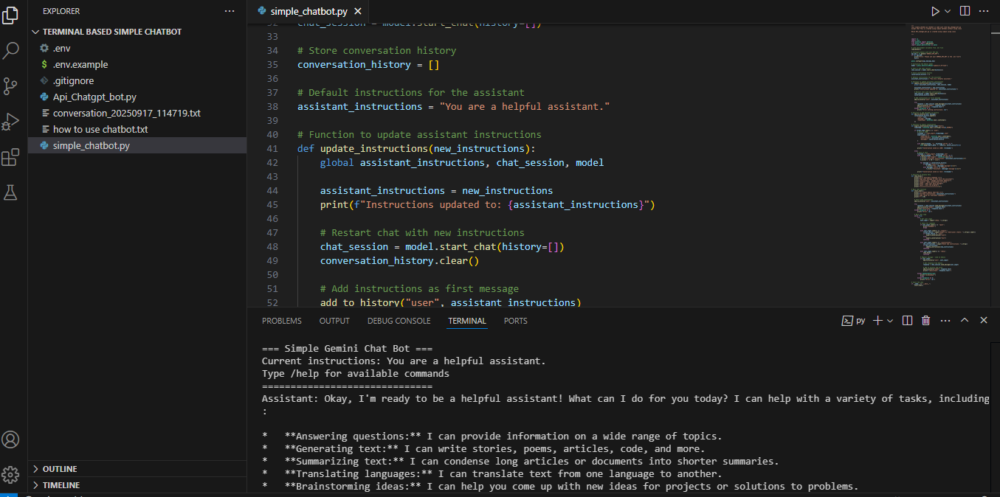

Chatbot Basic
Learn how to build your first AI chatbot — using Google Gemini 2.0 Flash, simple Python, and zero complexity.
Why This Tool?
Built for learning:
clean, readable code with comments
Simple framework:
Uses only standard Python + Google’s Gemini API — no complex frameworks
Terminal-based:
Run it right in VS Code’s integrated terminal
Easy setup
Requires only one API key — easy to set up with `.env.example`
Lightweight:
Runs instantly on any laptop
Perfect For:
1: Students, beginners, and self-learners who want to understand how AI chatbots work — step by step — without overwhelming libraries or cloud dependencies.
2: School projects, coding bootcamps, or personal study
💡 Note: This tool requires an internet connection to use Google’s Gemini API.
It is designed as a learning tool, not a private offline assistant.
You’ll learn how APIs work — and how to safely manage keys with environment variables.
How It Works
1: Install Python (3.9+)
2: Install required packages: pip install python-dotenv google-generativeai
3: Create a file named .env and add your Gemini API key:
GOOGLE_API_KEY=your_key_here
4: Run: python chatbot_basic.py
5: Type messages — get instant AI responses in your terminal!
What You’ll Learn
- How to load API keys securely using
.env
- How to send prompts to an LLM via REST API
- How to handle responses and format them cleanly
- How to build a looped conversation (chat history)
- How to structure real-world Python projects

*Terminal view — shows real user input and AI response

*Code view — clean, commented, beginner-friendly Python
Ready to Start Learning AI?
One-time payment. Lifetime updates. Get the full source code, setup guide, and future upgrades.
Buy Now — $49 One-Time
Built for learning:
clean, readable code with comments
Simple framework:
Uses only standard Python + Google’s Gemini API — no complex frameworks
Terminal-based:
Run it right in VS Code’s integrated terminal
Easy setup
Requires only one API key — easy to set up with `.env.example`
Lightweight:
Runs instantly on any laptop
Perfect For:
1: Students, beginners, and self-learners who want to understand how AI chatbots work — step by step — without overwhelming libraries or cloud dependencies.
2: School projects, coding bootcamps, or personal study
How It Works
1: Install Python (3.9+)
2: Install required packages: pip install python-dotenv google-generativeai
3: Create a file named .env and add your Gemini API key:
GOOGLE_API_KEY=your_key_here
4: Run: python chatbot_basic.py
5: Type messages — get instant AI responses in your terminal!
What You’ll Learn
- How to load API keys securely using
.env - How to send prompts to an LLM via REST API
- How to handle responses and format them cleanly
- How to build a looped conversation (chat history)
- How to structure real-world Python projects
*Terminal view — shows real user input and AI response
*Code view — clean, commented, beginner-friendly Python
Ready to Start Learning AI?
One-time payment. Lifetime updates. Get the full source code, setup guide, and future upgrades.
Buy Now — $49 One-Time